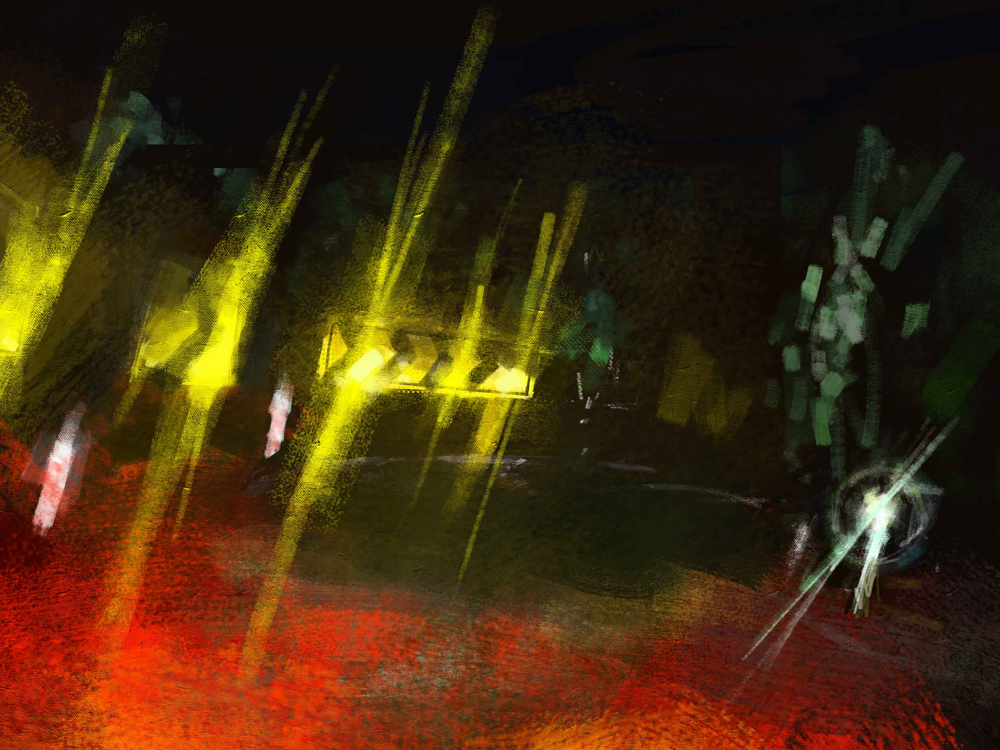
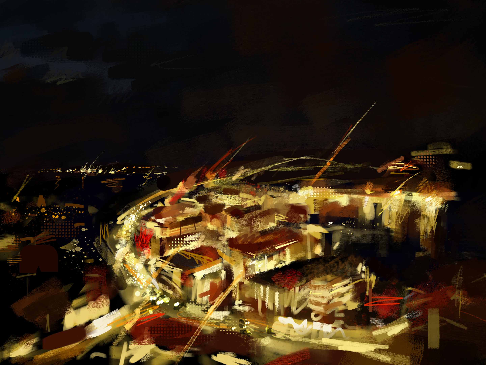
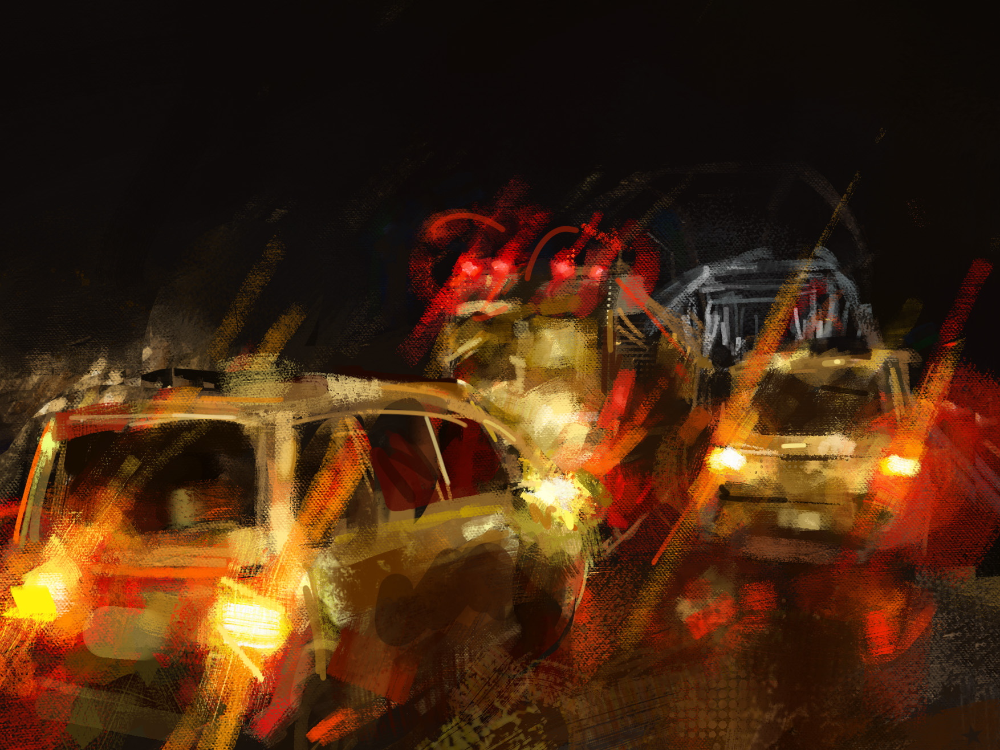
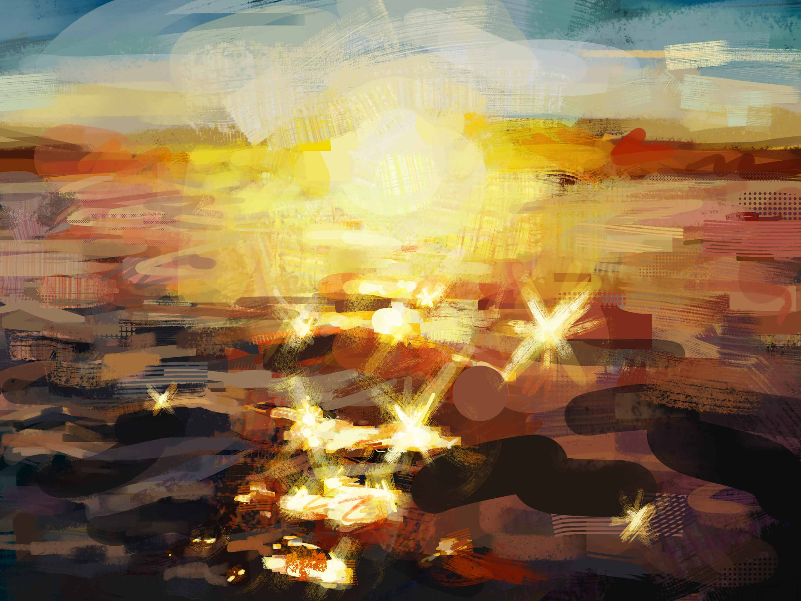
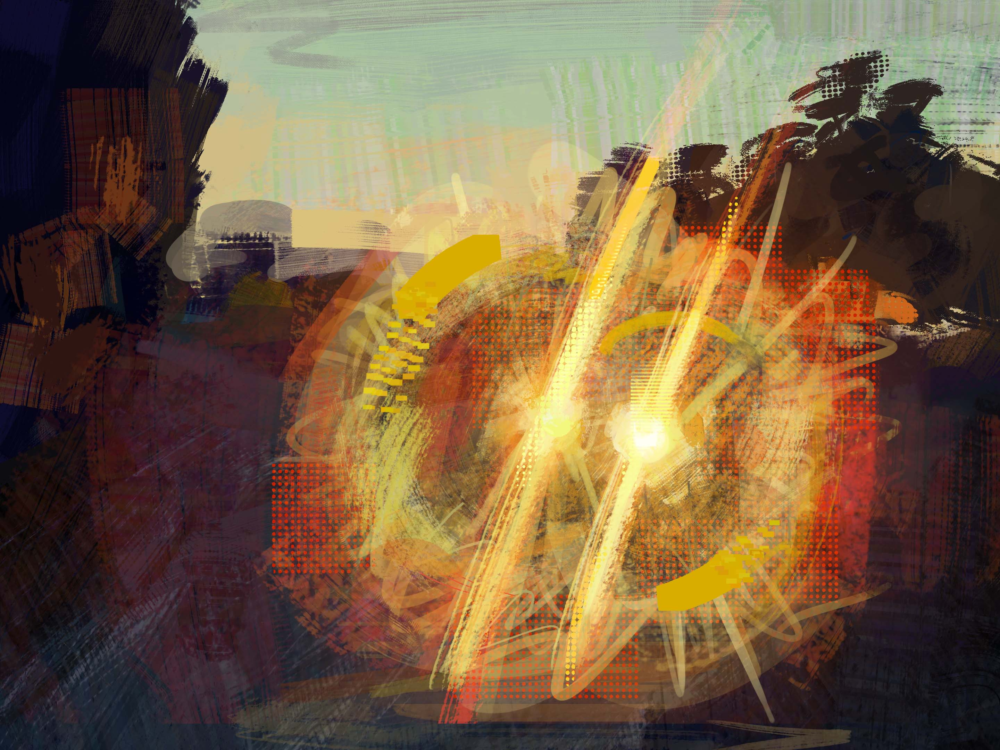
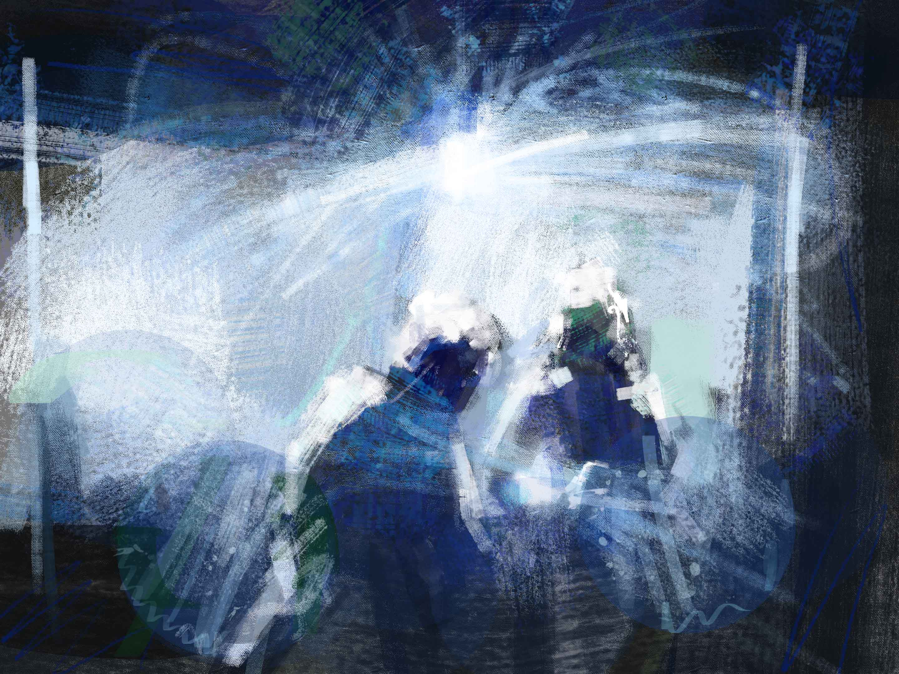
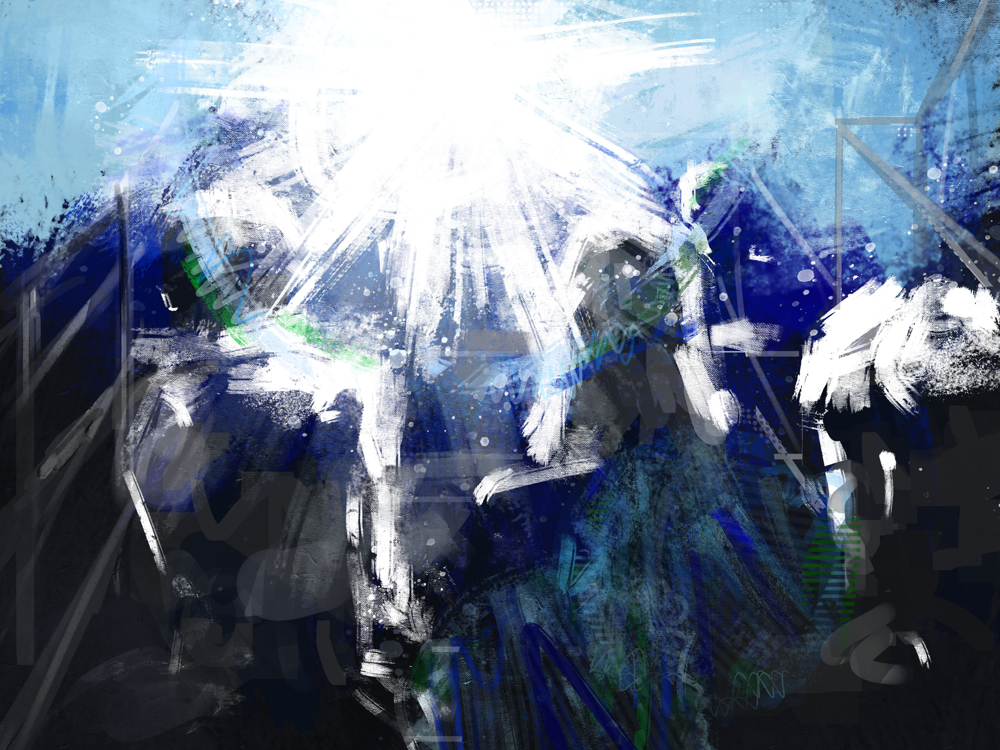
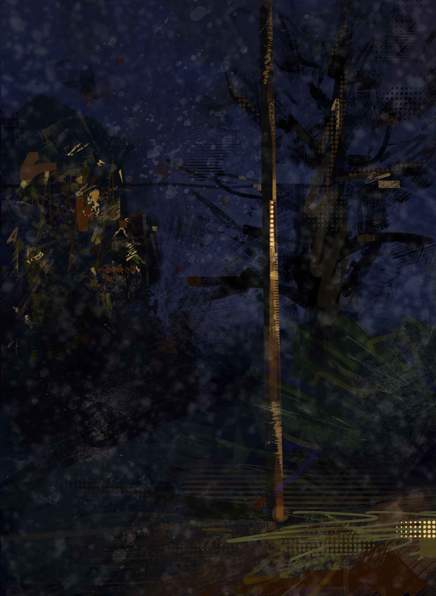

About
My eyes have problems that can cause cool looking effects, so I decided to make them the theme for my level 2 painting board.
Really observing my vision was quite cool, but I the actual paintings turned out pretty crap. They all were very rushed and I hardly put any thought into composition or anything and I think it definitely shows.

Astigmatism steaks and circular halos






Flare from eyelash

Overexposure, eye floaters and flare.

Grain from Visual snow